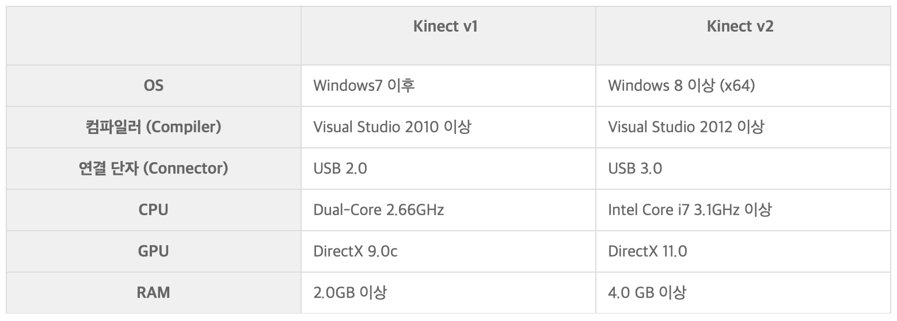
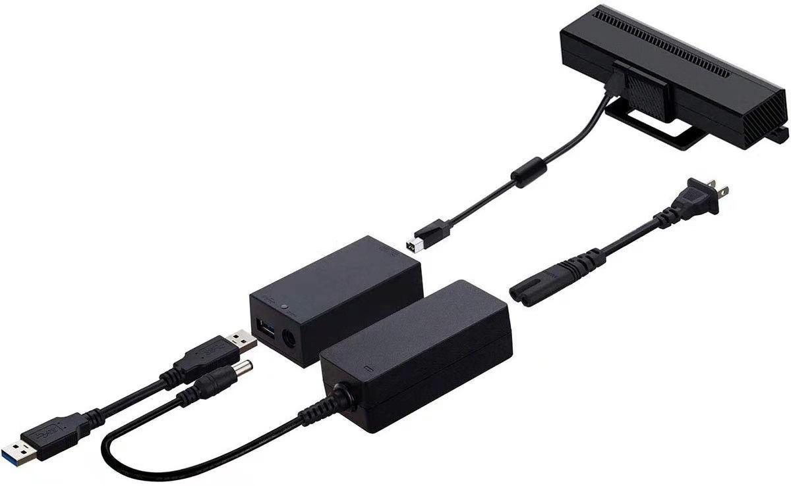
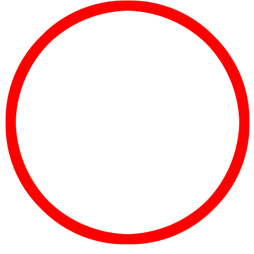
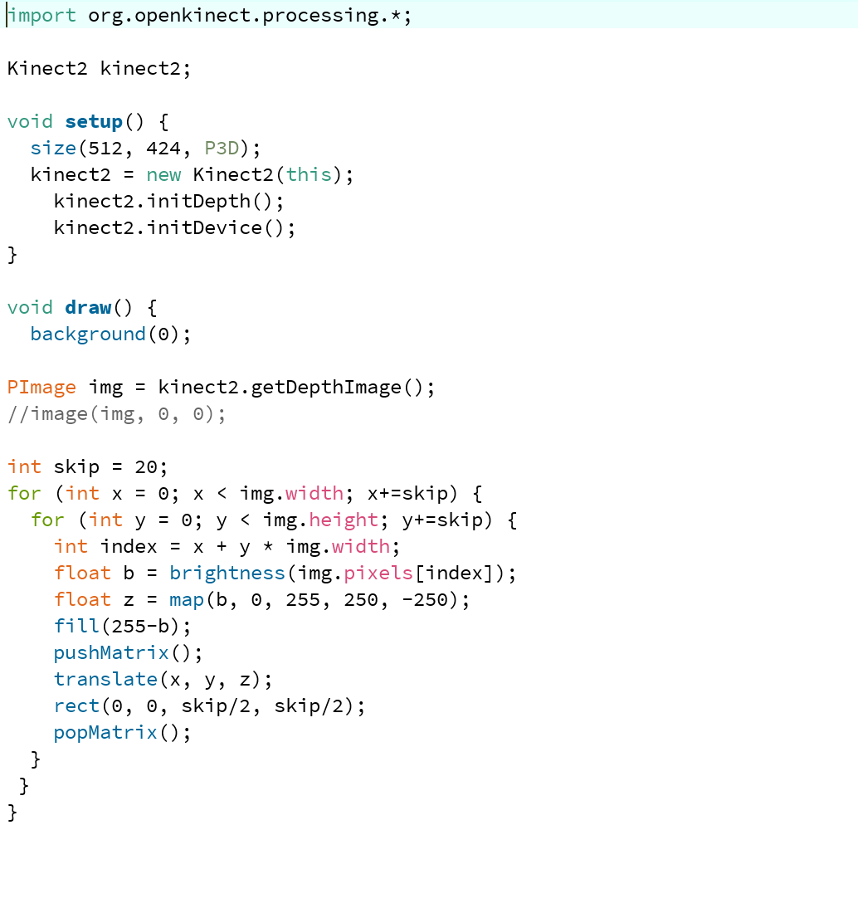
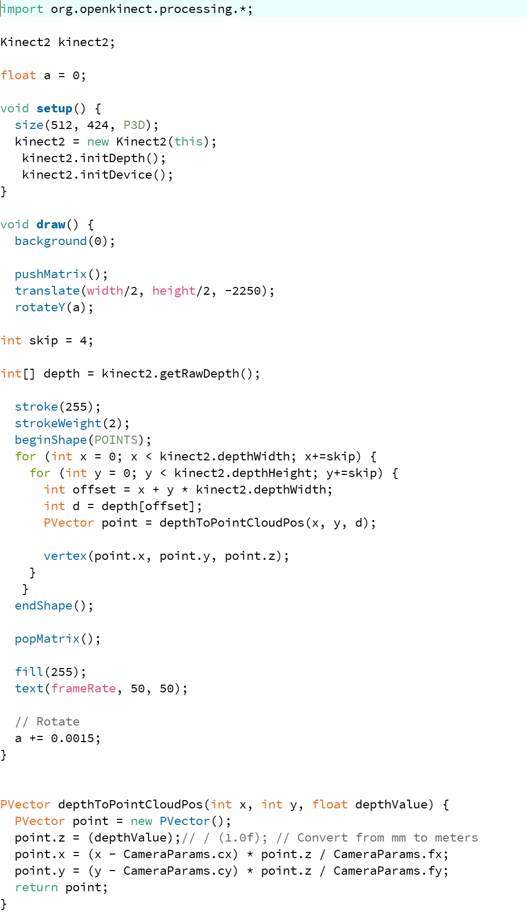
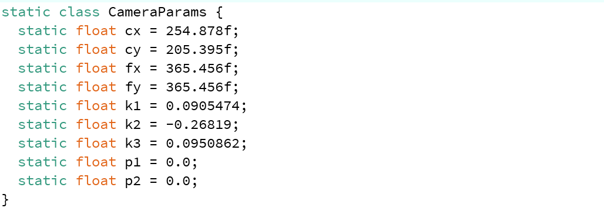
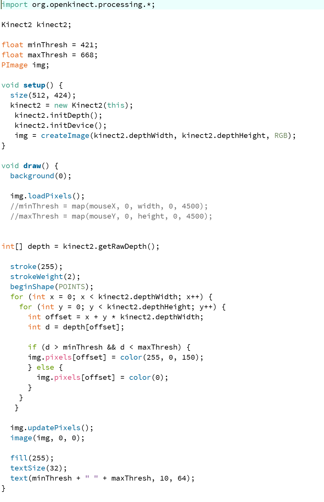
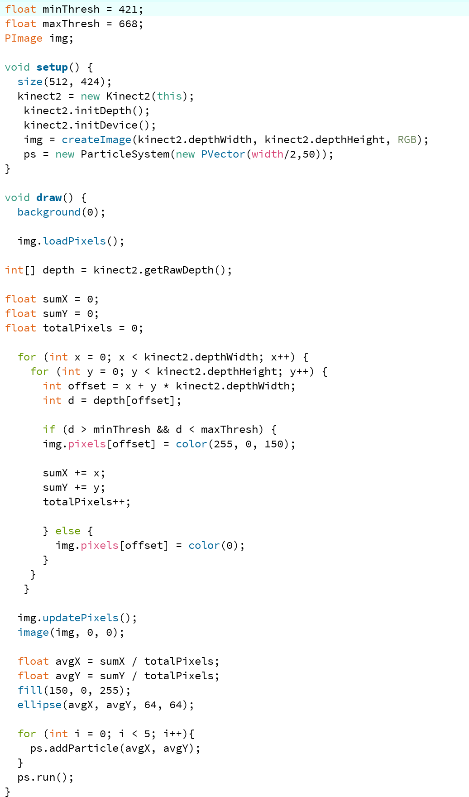

본 페이지는 키넥트와 프로세싱을 활용하여 인터렉티브아트를 제작하고 싶은 사람들을 위한 기초 설명 페이지입니다. 기본 개념을 익혀, 이후 여러가지 예시를 통한 미디어를 완성할 수 있는 발판이 되고자합니다. 그럼 간단한 정보부터 함께 알아볼까요?
Kinect & Processing
Depth의 이해
RawDepth
MinMax
Tracking
참고사이트
STEP 0. Kinect란?
2012년에 미국 마이크로소프트에서 발매 된 Kinect v1은 Depth와 Skeleton등의 정보를 쉽게 얻을 수 있기 때문에 전세계의 개발자와 연구자로부터 주목 받았다. 2014년에 발매 된 Kinect v2는 하드웨어, 소프트웨어 모두 발전했다. Kinect v2의 작동 요구 사항 비교표는 다음과 같다. 본 페이지는 kinect v2를 기준으로 한다.

STEP 1. Kinect 연결하기


선이 많지만, 각 홈의 모양이 다르기 때문에 알맞게 연결해주면 어렵지 않게 준비할 수 있다. usb포트는 컴퓨터에 연결하고 콘센트를 연결해주면 설치는 완료된다. 이 때, 피사체와 적당한 거리가 있어야한다.
STEP 2. Processing의 이해
Processing은 MIT 연구소 소속 Cassy Reas와 Ben Fry 가 개발한 미디어아트 및 교육용으로 만든 언어이다. 언어의 문법은 자바에서 가져왔지만 훨씬 단수화 되어있다. 간단하게 명령으로 시각적 표현이 가능한 것이 장점이며, 3D이나 영상제어 등도 어렵지 않게 구현 가능하다.
키넥트를 활용해 미디어아트를 표현할 때 Processing을 이용하며 프로세싱 홈페이지에서 무료로 다운가능하다.
▲홈페이지 바로가기
STEP 3. OS에 따른 기본 설정
Windows
Libraries - Open Kinect for Processing - Install
을 눌러 processing에서 kinect를 연동할 수 있게 한다.
시작에는 기본적으로
import KinectPV2.*;
KinectV2 kinect;
를 입력한다.
Mac
Libraries - Open Kinect for Processing - Install
을 눌러 processing에서 kinect를 연동할 수 있게 한다.
명암을 통해 깊이를 확인할 수 있다. void는 한 번 실행되는 것, draw는 반복해서 실행되는 것을 의미한다. Skip을 조절해 사각형의 크기를 바꿔볼 수 있다.

위와 같은 식이지만, Z값에 P3D를 활용함으로써 명암과 사각형의 크기 차이로 공간감을 연출할 수 있다.


공간 모든 곳에 눈금을 메겨주는 식과 키넥트 앞 물체의 x, y, z를
점으로 인식해주는 식을 결합한 이미지이다.

if~else 식으로 원하는 부분에만 색이 변할 수 있도록 설정, minThresh와 maxThresh 값을 바꿔 범위를 지정하면 원하는 부분만 나타나게 할 수 있다.
이때, 보이지 않는 범위를 숫자로 표현하려면 어렵기 때문에, 마우스를 움직이면서 원하는 범위를 확인해볼 수 있는 식이 // 이후의 두 식이다.

위를 통해 인식된 물체의 모든 점을 더하고, 총 픽셀로 나눠 평균점을 파악해 원을 따라다니게 하는 원리이다.
이를 이용해 파티클 예제를 대입하면 평균값을 따라다니는 원에서 파티클이 나오게할 수 있다.